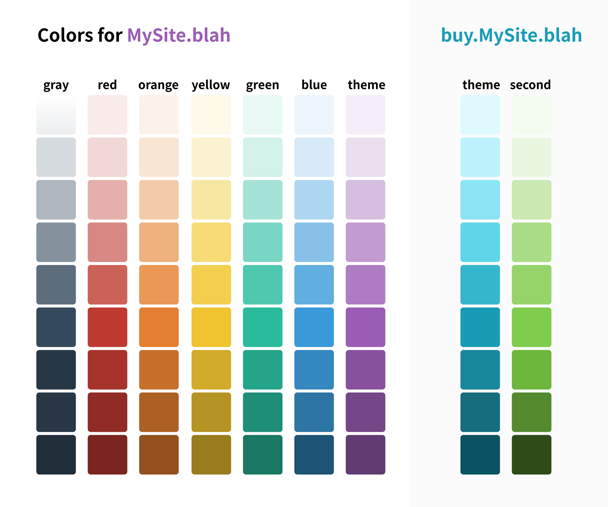

還在跟複雜的 CSS 的設定奮鬥嗎？用 Tailwind 來幫你實現真正的高效整潔！
什麼是 Tailwind CSS？
簡單來說 Tailwind CSS 是一套 Utility-First CSS，相當具有彈性，也非常適合快速刻板。在 Utility-First CSS 之間也算是殺出了一片天。不過這個工具的魅力到底在哪呢？且讓我慢慢說明。
Utility-First CSS
要說到 Utility-First CSS 的好，就要先從一般的 CSS framework 說起：
相信大家都對 Material-UI、Bulma、Bootstrap（framework 們表示躺著也中槍XD）這類 component 都定義好好，套上去馬上就有個像樣網站的 framework 不太陌生。
要 navbar 有 navbar，要 button 有 button，的確是非常方便。
但是使用這些前端 framework 很快就會遇到一個很頭痛的問題：不想要自己的網站看起來一眼就是套框架，但是想要客製化的話，又會遭遇維護上的麻煩跟困難。
1. 最糟糕的情況： override CSS
可能原本的框架沒有提供什麼比較好的 customize 的方式，或是自己選擇使用這些工具的方式導致很難 customize，只好各種 override 人家寫好的 CSS， 網站看起來還好好的就閉著眼睛 commit + push。但這種方式實在很容易把東西改壞。
2. 把 customized code 載下來
框架本身提供 customization，可以把各個地方修修改改再把 code 載下來。乍看之下好像很棒，但如果今天你手上的專案交給另一個人接手，他要如何知道哪些地方是原始的設定，哪些地方又被動過手腳了呢？
3. import 後再 override Sass variables
比較好的情況，可以 import 框架的 Sass，但又 override 部分 Sass variables，不但可以調整設定，也不容易造成管理、維護的問題。
但只要他已經把 UI 都定好了，可以調整的範圍往往就受到不少限制。如果使用 Utility-First CSS 的時候，的因為每個元件都要自己刻，哪裡不滿意、不符合需求，都可以在 utility class 加加減減中完成。簡單來說就是非常具有彈性吧。
快速架構
Tailwind CSS 把大致上 CSS 會用到的屬性都用單個 class 來表示。例如 .mt-1 對應的是 margin-top: 0.25rem;，.my-2 對應的是 margin-top: 0.5rem; margin-bottom: 0.5rem;。
.mt-1 {
margin-top: 0.25rem;
}
mt-1 實在是比 margin-top: 0.25rem; 短太多，也不容易打錯字（欸）。
因為可以直接把對應的 class 直接加在你想要作用的 element 上，大部分的情況下可以不需要自己動 stylesheet 的部分，相當方便。於是你就可以非常迅速地把網站的各種部分建構出來，也可以很輕鬆地調整。
「輕鬆」這件事情聽我嘴上說說似乎也不準，不如自己動手試試XD
如果還來不及在 local 新增專案、安裝 Tailwind，可以先在 Tailwind.run 嘗試看看。
官方文件齊全
除了 Utility-First CSS 本身的好處以外，Tailwind CSS 雖然還不是十分被廣泛使用，但想要上手的話，光是官方文件就十分充足、一目瞭然。（總覺得教學文不多，但有可能是官方文件就說得很清楚，也不多人想寫教學文XD）
從 installation、components 範例、每個 utility css 的簡介……甚至來有教學 screencasts 可以看，真的非常用（ㄏㄣˇ）心（ㄏㄨㄟˋ）。
註： Tailwind CSS 作者推出付費的 Tailwind UI 後，官網上就不再放 component 範例給大家參考了。但舊版文件的「components 範例」連結仍可以參考
缺點
開始用 Tailwind 以後，你開始發現你的 html code 充滿了一大串像這樣的東西：
<div class="relative w-full h-48 bg-primary-200 text-center overflow-hidden text-0 leading-48"> ... </div>
剛開始接觸時可能會覺得用起來會讓 code 相當醜，看起來非常不習慣，想跟我說「不是跟我說高效『整潔』嗎，在騙肖？」
先別急著摔筆，如果前端有使用 React、Vue 等框架並且把畫面上的組成準確的分成不同 component，其實不用太擔心會有一堆重複的 utility class 集合在你的字裡行間亂竄。要是有一些出現頻率高的元件（eg. 按鈕、input），也可以考慮用 @apply 適當地切出一些 CSS components。
如果我好好地切 component，其實還是會很好維護的。如果你還是要跟我 argue 一大串 class 看得很煩躁，可能必須說這本來就是工具之間的取捨，以醜醜的 code 為代價，可以換來快速開發，讓你早點下班休息也未嘗不好 ☕
和 inline CSS 的差異
至於有些人會問：「蛤？這樣不是跟寫 inline CSS 一樣嗎？」 我一開始也是這樣想的！ 但其實 Tailwind 有一些隱藏的優點，是 inline CSS 很難辦到的：
1. 遵循規範
相信新手剛開始學寫網頁的時候，都會有這樣的經驗，常常會隨心所欲地亂加 padding、margin，40px 還是 50px 都隨我心情 XD
後來開始工作、接案以後， 才會深刻體悟到原來這些數字不能像去菜市場買菜一樣亂喊價 。如果沒有對這些數值有一定的規範，各個 component 搭配起來，最後呈現給使用者的畫面也會出現視覺上的平衡問題。
如果全部寫 inline CSS，是很難去注意有沒有哪裡違背了定義好的規範。要一一去對數值跟色碼有沒有寫對，太過辛苦也不實際：
<div style="width: 100%;padding-top: 64px;padding-bottom: 160px;">
<div style="padding: 24px;">
<h1 style="font-size:20px;color:#2d3748;font-weight: 400;">
<!-- .... -->
</h1>
<div style="margin-top:64px;color:#718096;">
<!-- ... -->
</div>
</div>
</div>
改用 Tailwind CSS 以後，顏色、spacing 等等都是用 config 來做管理，可以比較嚴格地規範可以使用的數值和色碼，避免沒有規範地隨意下 padding、加 background-color 等等。
<div class="w-full pt-16 pb-40">
<div class="p-6">
<h1 class="text-xl text-gray-800 font-normal">
<!-- .... -->
</h1>
<div class="m-16 text-gray-600">
<!-- ... -->
</div>
</div>
</div>
2. Responsive
用 inline css 基本上做不到 Responsive Web Design，因為包含 @media 的 rules 是無法放在 inline css 裡的。
在使用 Tailwind CSS 的時候，只要這個 utilty class 的 responsive variant 有被打開，就會產生像是底下的 CSS classes：
/* 原本的 utilty class */
.w-1\/4{
width: 25%;
}
@media (min-width: 992px){
.lg\:w-1\/4{
width: 25%;
}
}
@media (min-width: 1280px){
.xl\:w-1\/4{
width: 25%;
}
}
於是就可以簡單地使用 .xl:w-1/4 .lg:w-1/4 等 classes 來做 responsive design。
比方說，我想根據視窗大小改變元素的寬度跟顏色：
See the Pen Tailwindcss example: responsive by 文月 (@requiemformemories) on CodePen.
以 width 來說，預設 responsive 就是打開的，不需要調整 customized config (tailwind.config.js)就有得使用。
// defaultConfig.stub.js:L680
width: ['responsive'],
預設的 variant 可以直接參考 Tailwind Github 上的 default configuration，或者每個 utility classes 的簡介都會有 Responsive and pseudo-class variants 的章節可以參考
3. Pseudo-classes
要透過 inline css 加上 :hover, :active 也是辦不到的。但是 Tailwind 提供 hover、focus、active、disabled、visited、first-child …… 等 variants。讓你可以很容易地加上對應的 utility class，就能得到 hover、active 等效果。
比方說把 backgroundColor 的 variant 預設就已經把 hover、focus 打開了，所以就可以直接使用 hover:bg-teal-600、focus:bg-teal-600 這樣的 classes 來製造 hover 或 focus 時的效果。
See the Pen yLYLeMg by 文月 (@requiemformemories) on CodePen.
順帶一提，Tailwind 還有個 group-hover 的 variant，當某個 utility 的 variant 加上 group-hover 以後，就會產生像下面這種 CSS classes：
.group:hover .group-hover\:text-blue-400{
color: #63B3ED;
}
於是你可以很輕鬆地做到 group hover 的效果：
See the Pen Tailwindcss example: group hover by 文月 (@requiemformemories) on CodePen.
誰不適合 Tailwind？
任何工具都不會是絕對完美或是絕對適合所有族群，自己覺得如果有一些特殊的狀況或需求，可能用 Tailwind 也會很痛苦：
1. 不擅長從零開始自己刻板的新手
我想如果是不擅長刻板的新手，又要在時限內地交出專案，utility-first css 應該都會用得蠻痛苦的。但還是鼓勵不擅長刻板的朋友，絕對不要被 UI components 所迷惑，對於太過方便的東西產生依賴><”
2. 後台管理等等，只需要簡單的 UI，不希望花時間刻板
如果沒有這個時間、也沒有這個需求需要自己刻版，其實也沒什麼用 utility-first css 增加自己困擾的理由。
3. 網站需要支援較舊的 browser
Tailwind on the other hand is a low-level utility framework, where most of the classes map directly to individual CSS properties. This means that which browsers you support is really up to you, not the framework.
根據 Tailwind 的官方說明，browser 支援度這件事情是看使用者自己。畢竟知道自己要支援到 IE9 的人，自己就會知道不該用 flexbox、:focus-within 等等。
但自己覺得這套工具在設計上本身就不太想顧慮到舊瀏覽器的支援，比方說大部分的單位都以 rem 為主，transform 的 utility classes 也直接用了 CSS variables 來實作。這個部分可能需要 override spacing 設定，transform 的部分也可以考慮自己寫 plugin。
也不是說需要支援舊瀏覽器的話，Tailwind 就完全不適合。只是如果想試試 Tailwind，可能要了解一下工具的侷限，自己調整一下設定等等。
註：Tailwind v2.0 後放棄支援 IE11（可參考新版的 Browser Support 頁面）。支援度基本上都以最新穩定版本的現代瀏覽器為主。
4. 只想直接 load CDN
必須說這真的是個讓 Tailwind 優勢盡失的使用方式。所有調整 configuration 的部分完全沒有辦法使用，而且 CSS 檔案會變得很龐大（無法透過 purgeCSS 去掉沒有用到的 classes）。以上這幾點讓我強烈不推薦用 CDN。
但如果你喜歡用 Tailwind 刻板的感覺，並且預設的設定就能滿足你的需求，那也無妨。
充滿彈性的 Configuration
介紹完 Tailwind CSS 是怎麼樣的工具以後，想跟大家談談一些 Tailwind 很強大的地方，透過非常具有彈性的 Configuration，配上 plugin，可以讓你比較優雅地管理繁雜的 styles 們。
Tailwind CSS 本來就提供基礎的 configuration，包含 color、spacing 等。例如 spacing 的部分，預設的定義大概如下：
module.exports = {
theme: {
// ...
spacing: {
px: '1px',
'0': '0',
'1': '0.25rem',
'2': '0.5rem',
'3': '0.75rem',
'4': '1rem',
'5': '1.25rem',
'6': '1.5rem',
'8': '2rem',
'10': '2.5rem',
'12': '3rem',
'16': '4rem',
'20': '5rem',
'24': '6rem',
'32': '8rem',
'40': '10rem',
'48': '12rem',
'56': '14rem',
'64': '16rem',
}
// ...
}
// ...
}
全部的 default config 可以直接看這裡。總之，在不調整設定的情況下，你其實就可以輕鬆地透過 mr-1、text-red-600 等 utility classes 就把網站迅速地架構出來。
然而，開發的時候為了要符合客戶的需求（eg. 網站配色），基本的設定往往是不夠應付的（總不能為了用 Tailwind 叫客戶改主色吧）。所幸 Tailwind CSS 可以彈性地調整 configuration，override 或 extend 一些設定，把 configuration 調整成你需要的樣子。
當你安裝好 Tailwind 以後，可以透過指令產生 tailwind.config.js：
# npm
npx tailwind init
# yarn
yarn tailwind init
接者你應該會得到一個空空如也的 config：
module.exports = {
theme: {
extend: {},
},
variants: {},
plugins: [],
}
你可以在直接在這個 config 裡加入想要 customize 的部分，之後這份 customized config 會自動 inherit default config。所以不需要把 default config 複製一份過來。
接著大致上你可以做底下幾件事：
Override themes
如果某個設定不符合你的需求，可以直接把它整個 override 掉。舉例來說，我只想要自己定義網站的 breakpoints，不想使用 Tailwind 原本定義的 640px(sm)、768px(md)、1024px(lg)、1280px(xl)。想要改成 360px(xs)、576px(sm)、768px(md)、992px(lg)、1440px(xl)。
module.exports = {
theme: {
screens: {
xs: '360px',
sm: '576px',
md: '768px',
lg: '992px',
xl: '1440px',
},
},
variants: {},
plugins: [],
}
之後有用到 {screen} 的 classes 都會採用剛剛自己定義的設定：
/* max-w-{screen} 的部分 */
.max-w-screen-xs {
max-width: 360px;
}
/* ... */
.max-w-screen-xl {
max-width: 1440px;
}
/* container 的部分 */
.container {
width: 100%;
}
@media (min-width: 360px) {
.container{
max-width: 360px;
}
}
/* ... */
@media (min-width: 1440px) {
.container {
max-width: 1440px;
}
}
/* 其他 variant 有 responsive 的 classes */
@media (min-width: 360px)
.xs\:px-3 {
padding-left: .75rem;
padding-right: .75rem;
}
}
/* ... */
@media (min-width: 1440px)
.xl\:px-3 {
padding-left: .75rem;
padding-right: .75rem;
}
}
Extend themes
如果希望保留原本的設定，再另外加上自己需要的其他設定。就可以用 extend 的方式。舉例來說，除了預設的 border-radius，想要自己擴充 border-radius: 1rem; 來使用：
module.exports = {
theme: {
extend: {
borderRadius: {
xl: '1rem',
}
},
},
variants: {},
plugins: [],
}
於是原本的 rounded-none、rounded-sm、rounded 等等都還會在，但又多了我們自己擴充的 rounded-xl 可以使用。
Referencing the default theme
另外想特別提醒一下，上面的 extend 只是 shallow merging，如果像是底下這樣的情況：
module.exports = {
theme: {
extend: {
colors: {
red: {
default: "#E53935",
},
},
},
},
variants: {},
plugins: [],
}
大家心裡的預期可能會以為 inherit default config 以後的結果是這樣：
red: {
100: '#fff5f5',
200: '#fed7d7',
300: '#feb2b2',
400: '#fc8181',
500: '#f56565',
600: '#e53e3e',
700: '#c53030',
800: '#9b2c2c',
900: '#742a2a',
default: "#E53935",
},
實際上卻會變成這樣：
red: {
default: "#E53935",
},
因為只會 inherit 單一層，不會往下 deep merge，所以 100 - 900 的設定全部都會被覆蓋掉。如果想要保留 100 - 900 的設定，就必須從 default config 去 reference：
const defaultTheme = require('tailwindcss/defaultTheme')
module.exports = {
theme: {
extend: {
colors: {
red: {
...defaultTheme.theme.colors.red,
default: "#E53935",
},
},
},
},
variants: {},
plugins: [],
}
Variant
上面在講 Responsive 與 Pseudo Classes 就有大概提過 variant 了。Tailwind 絕大多數 utilities 都可以加上 variant，default config 本來就會把一些常用的 variant 加上，大部分的 utilities 的 responsive 都是打開的。
目前所有的 variants 是：responsive、group-hover、focus-within、first、last、odd、even、hover、focus、active、visited、disabled。每一個 variant 的功能可以參考官方說明。
如果今天想要把 borderWidth 加上 first 跟 hover，可以先看一下原本 borderWidth 有哪些 variant：
// defaultConfig.stub.js:L628
borderWidth: ['responsive'],
接著在 tailwind.config.js 加上原本的 variant 以及要新加的 variant：
module.exports = {
theme: {},
variants: {
borderWidth: ['responsive', 'first', 'hover'],
},
plugins: [],
}
產生出來的對應 utility classes，在 CSS 中的順序會照著上面的順序，first 的會在前，hover 的會在後：
.first\:border-0:first-child {
border-width: 0;
}
/* 略... */
.hover\:border-0:hover {
border-width: 0;
}
/* 略... */
換言之，hover 系列的 utility classes 優先度會比 first 系列的來得高。比方說，在同一個 element 上加上 first:border 和 hover:border-2，當元素被 hover 時，hover:border-2 會覆蓋掉 first:border。如果放反，hover 效果就不會出來。
官方有一套建議的順序，如果沒有什麼特殊的需求導致不能遵循，就盡量參考一下吧：
['responsive', 'group-hover', 'focus-within', 'first', 'last', 'odd', 'even', 'hover', 'focus', 'active', 'visited', 'disabled']
Plugin
Tailwind 也提供讓大家自己寫 plugin 擴充各種功能。可以透過 plugin 做到的事情很多，包含加上新的 utility、base styles、components 等等。
另外，寫 plugin 的時候，都可以透過 variant()、theme() 取得 user’s config 的 theme 與 variant。
至於想要用第三方的 plugin 的話，可以看看 Awesome Tailwind CSS、Tailwind Toolbox 上有沒有符合需求的 plugin。
除此之外，官方也有提供針對表單元件的 plugin。現在的網站除非特別陽春，否則表單元件通常都不會讓他是原生醜醜的樣子，但如果每次刻板都要重頭改一次 input 的樣式也是相當崩潰（就只是想讓 text field 看起來像樣一點而已><）。相信這個 plugin 也是相當實用。
這個部分這裡就不在多花篇幅說明 plugin 所有 usage，底下只針對 v.1.2.0 新增的功能：extend the user’s config 做介紹。
試想情境：公司的新網站要一部分的主站視覺，又要加上新的設計？
試想今天你的需求是這樣：
你在做公司的子網站，主站已經有一份對應的 Tailwind Config（包含 color schemes 以及 breakpoints 等等）。但是同時新站又有新站的 primary colors 等其他 config，這個時候該怎麼辦呢？

像上圖，gray、red、orange 等等都要從 Tailwind 預設的色碼改成主站使用的顏色，子站的 theme colors 要 override 主站的 theme colors ，另外增加 second 系列顏色。
主站可能還有自己定義的 lineHeight、spacing、boxShadow … 等等，以及 variants，這些子站都要繼承才行。
// 主站的 tailwind.config.js
module.exports = {
theme: {
colors: {
gray: {
100: 'EBEDEF',
200: 'D6DBDF',
300: 'AEB6BF',
400: '85929E',
500: '5D6D7E',
600: '34495E',
700: '273746',
800: '283747',
900: '212F3C',
},
// ...
},
boxShadow: {
default: '0 1px 7px rgba(0,0,0,.05)'
},
// ...
extend: {
borderRadius: {
'xl': '0.75rem'
},
// ...
},
},
variants: {
borderWidth: ['responsive', 'first', 'hover', 'disabled'],
// ...
},
plugins: [],
}
當然也可以直接讓子站自己維護一份 config 就好。先把主站的東西加進來，再把子站的 config 都加進去，全部塞在一份 config 裡。
但是，一旦子站的設定跟主站的混在一起，事後想要再區別開來就不是這麼容易了。
自從 Tailwind 在 v.1.2.0 加入新功能，允許大家透過 plugin 來 extend config 以後，就可以更漂亮的解決這個問題。
聽說只要簡單三步驟，就可以迅速完成呢！
STEP1: 把主站的 config 放進 plugin 裡
新增一個 plugin，把主站的 config 放進去：
// plugins/my_site_config.js
const plugin = require('tailwindcss/plugin')
module.exports = plugin(function ({ _addUtilities, _variants, _theme }) {}, {
theme: {
colors: {
gray: {
100: 'EBEDEF',
200: 'D6DBDF',
300: 'AEB6BF',
400: '85929E',
500: '5D6D7E',
600: '34495E',
700: '273746',
800: '283747',
900: '212F3C',
},
// ...
},
// ...
extend: {
borderRadius: {
'xl': '0.75rem'
},
// ...
},
},
variants: {
borderWidth: ['responsive', 'first', 'hover', 'disabled'],
// ...
},
})
STEP2: 把子站要 override 與 extend 的內容加進 config 中
接著把子站獨有的 color.. 等等設定放進 config：
// tailwind.config.js
module.exports = {
theme: {
fontSize: {
remark: '.75rem',
base: '1.1rem',
title: '2.75rem',
},
// ...
extend: {
colors: {
theme: {
100: '#DDFAFF',
200: '#BAF2FC',
300: '#88E4F4',
400: '#58D6EC',
500: '#2CB6CE',
600: '#009CB7',
700: '#09889E',
800: '#0C6D7E',
900: '#025362',
},
// ...
},
},
},
variants: {},
plugins: [],
}
STEP3: 子站的 config 加上剛剛做好的 plugin
在 config 裡 require 剛剛放了主站 config 的那個 plugin：
// tailwind.config.js
module.exports = {
theme: {
fontSize: {
remark: '.75rem',
base: '1.1rem',
title: '2.75rem',
},
// ...
extend: {
colors: {
theme: {
100: '#DDFAFF',
200: '#BAF2FC',
300: '#88E4F4',
400: '#58D6EC',
500: '#2CB6CE',
600: '#009CB7',
700: '#09889E',
800: '#0C6D7E',
900: '#025362',
},
// ...
},
},
},
variants: {},
plugins: [require('./plugins/my_site_config')],
}
這樣基本上就大功告成了！是不是很簡單呢？
最後的提醒
恭喜大家把這篇落落長的介紹文給讀完了！希望這篇文章也能給大家一點小小的幫助。
不知道大家有沒有想到，應該在意一下檔案大小的部分。如果沒有調整 config 的情況下安裝完，沒有壓縮或 minified 應該會是 783.5KB 左右。
畢竟 Tailwind 幫你產生太多你大都不會用上的 utilities 了，加上 variant 的部分乘一乘，數量相當可觀。
因此，官方建議使用 purgeCSS，把沒用上的 CSS 給去除，幫 CSS 檔案瘦身一下。
註： purge 功能於 v1.4.0 加進 Tailwind 中，purgeCSS 不在需要另外安裝。請改參考新版文件的 Remove unused CSS 章節
先安裝 purgeCSS：
# npm
npm install @fullhuman/postcss-purgecss -D
# yarn
yarn add @fullhuman/postcss-purgecss -D
在 postcss.config.js 的 plugin 加上 PurgeCSS：
// postcss.config.js
module.exports = () => ({
plugins: [
require('tailwindcss'),
require('autoprefixer'),
require('@fullhuman/postcss-purgecss')({
content: [
'./**/*.html',
'./**/*.pug',
'./**/*.jsx',
// etc
],
defaultExtractor: content => content.match(/[\w-/:]+(?<!:)/g) || []
})
]
})
這邊的 content 放的是你的 template、html 的路徑，purgeCSS 會從這些檔案檢查你用到哪些 CSS，檢查有用到的才不會拔掉。
換言之，如果你只有在某個檔案用到 bg-gray-700，但這個檔案的路徑不符合 content 中的任何一個規則，這個 bg-gray-700 的 CSS 就會被清除。
如果發現你加了 class 卻沒反應，不妨檢查看看這個檔案有沒有涵蓋在 content 的規則裡。
最後的最後，希望大家今天認識 Tailwind 這套工具，都有些許收穫，也玩得開心哦 ❤️
備註
本文最初放在五倍紅寶石的專欄文章中，然而隨著公司分家改組，文章跟著被移除了QQ
因此將文章移至部落格中。
本文撰寫時 Tailwind 在 v.1.2.0 左右，因此裡面有些資訊可能已經有點老舊，日後有空我會再重寫一篇推坑文與心得文給大家。